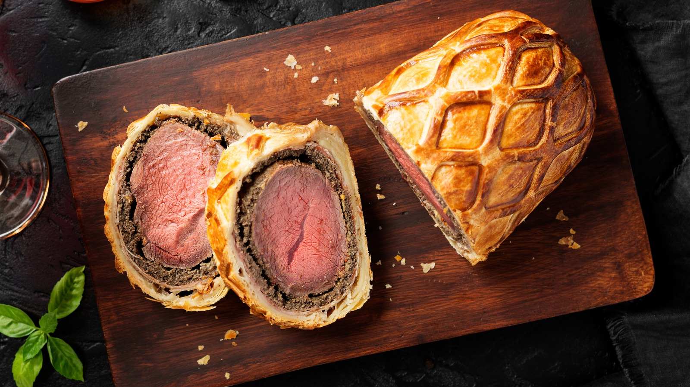

Beef Wellington

Description
Beef Wellington is a classic British culinary dish featuring a center-cut beef tenderloin (filet mignon) coated in pâté and mushroom duxelles, wrapped in puff pastry, and baked until golden. It often includes prosciutto or parma ham to lock in moisture and is known as a luxurious, savory centerpiece.
Ingredients:
The Beef & Prep
- Center-cut Beef Tenderloin: Approximately 2-2.5 lbs, trimmed
- Olive Oil: For searing the meat.
- Dijon Mustard: To brush onto the beef after searing for flavor and as an adhesive.
- Salt & Black Pepper: For generous seasoning.
Mushroom Duxelles (The Filling)
- Mushrooms: About 1 lb of finely chopped mushrooms, such as cremini, button, or chestnut.
- Shallots: 1-2 medium shallots, finely minced.
- Garlic: 2-4 cloves, minced.
- Unsalted Butter: For sautéing the mushroom mixture.
- Fresh Thyme: Leaves only, for an earthy aroma.
- Optional Liquid: A splash of dry white wine or cognac to deglaze the mushrooms.
Assemblu & Pastry
- Prosciutto or Parma Ham: 8-12 thin slices to wrap the beef and prevent the pastry from getting soggy.
- Puff Pastry: One large sheet or package (about 14-17 oz), thawed if frozen.
- Egg Wash: 1-2 large eggs (or just the yolks), beaten for a golden finish.
- All-purpose Flour: For dusting the surface when rolling out the pastry.
Steps:
Sear and Prep the Beef
- Season and Sear: Generously season your beef with salt and pepper. In a smoking-hot skillet with oil, sear the tenderloin on all sides for about 2-3 minutes per side until deeply browned.
- Coat with Mustard: While the beef is still warm, brush it all over with Dijon or English mustard. This adds flavor and helps the next layers stick. Let it cool completely at room temperature or in the fridge.
Make the Mushroom Duxelles
- Sauté until Dry: Pulse the mushrooms, shallots, and garlic in a food processor until very finely chopped. Sauté the mixture in a dry pan or with a little butter over medium-high heat for 10-20 minutes.
- Cool Down: It is critical to cook off all moisture to avoid soggy pastry. Once the liquid has evaporated and the mixture is a thick paste, set it aside to cool completely.
The First Wrap (Prosciutto & Mushrooms)
- Layering and Rolling: Overlap prosciutto on plastic wrap, spread with cooled mushroom paste, and place the beef in the center. Use the wrap to tightly roll the prosciutto around the beef into a tight "log".
- Chilling: Refrigerate for 15-30 minutes to firm up.
The Final Wrap (Pastry)
- Assembly: Roll out puff pastry, place the un-wrapped beef in the center, and brush edges with egg wash. Encase the beef completely, trimming excess, and sealing the seams tightly.
- Second Chill: Chill the assembled log for 15 minutes to ensure a crisp crust.
Bake and Rest
- Baking: Preheat oven to 400°F (200°C), apply an egg wash, and bake for 25-45 minutes until the pastry is golden.
- Finish: The beef should reach a final internal temperature of roughly 125°F-130°F (52°C-54°C) for medium-rare. Resting for 10-15 minutes before slicing is crucial.
Home